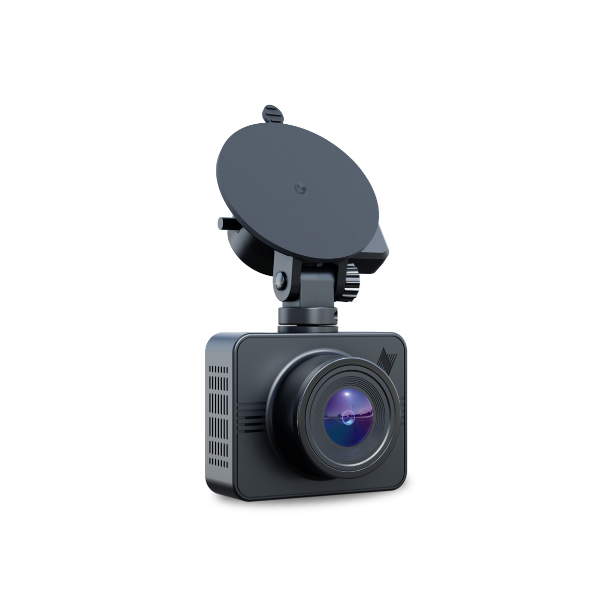

One network. Three kinds of certainty
Find your certainty.

For drivers
Protect Your Drive
A Nexar dashcam watches the road so you don't have to wonder what happened. Every mile you drive makes roads safer for everyone.
Start driving safer →
For fleets
Know Your Fleet Is Safe
Plug in. See everything. Simple to start, easy to scale with real-time proof your drivers are protected.
See how it works →

For enterprise AI
Verify Your AI
10 billion miles of ground truth. The real-world intelligence layer your models can't build alone.
Explore enterprise solutions →